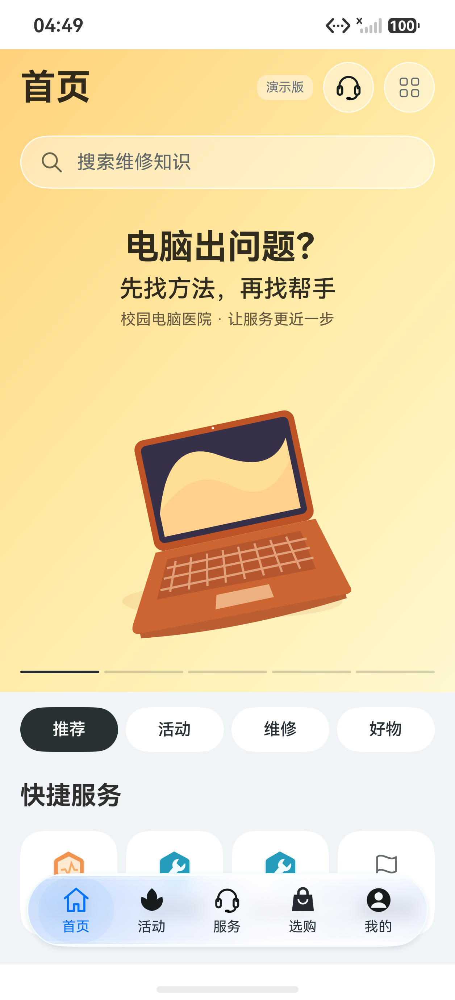
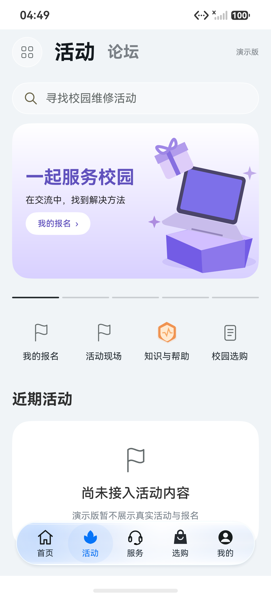
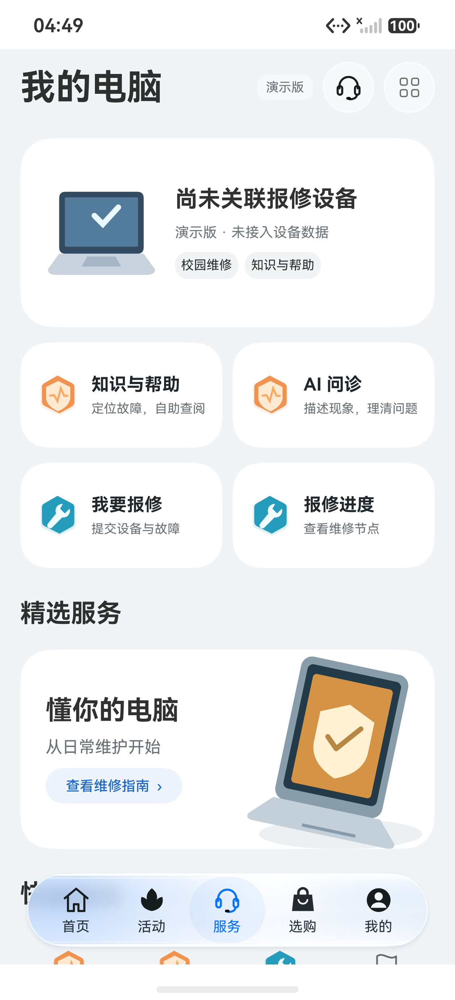
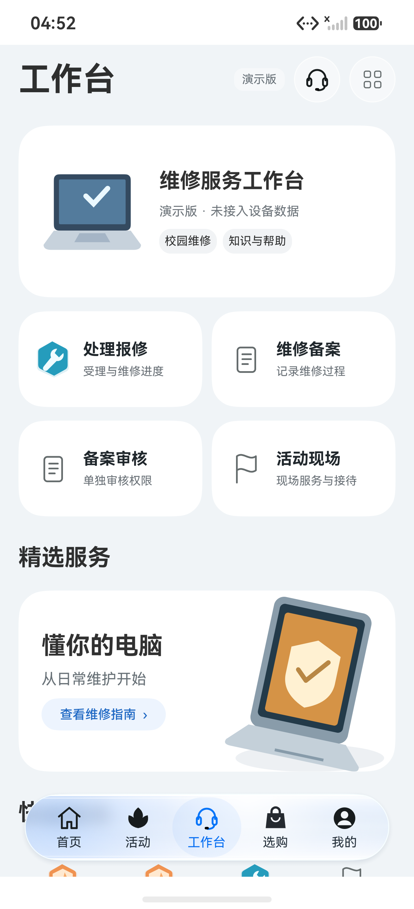
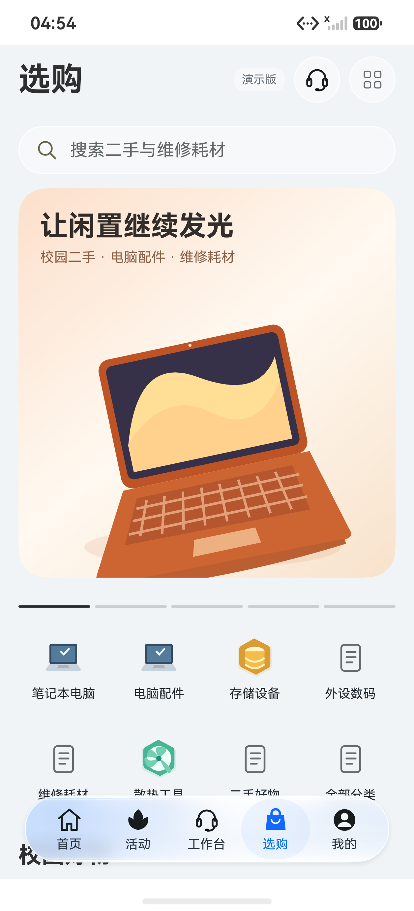
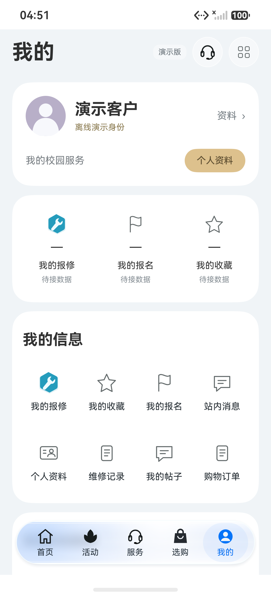
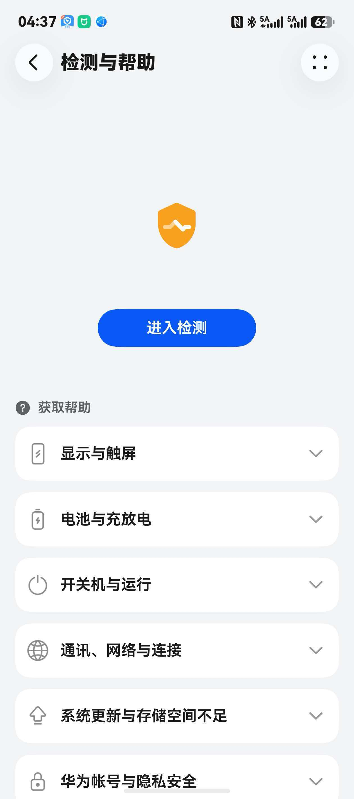
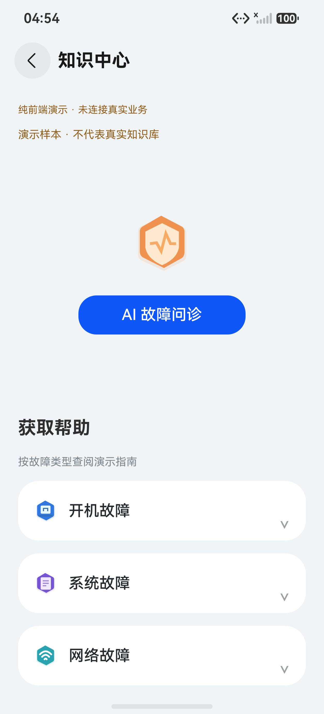
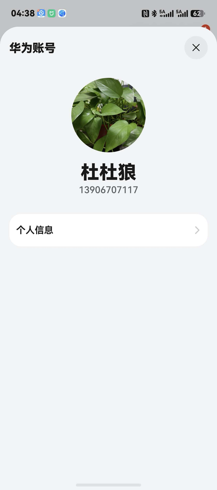
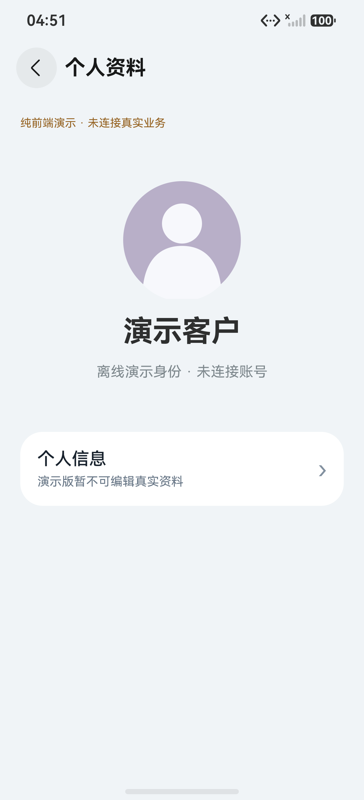

首页
金色背景贯穿标题、搜索与主视觉，校园电脑插画替换会员营销；无商业日期或通知计数。


本页为 V2 首版快照（返修前），不代表终态；最终态见 ../final/（含 V2-F1～V2-F8 修复后的终态实拍），索引见 ../../issue-83-demo.md。
2026-10-19 · 右图均为实际 HarmonyOS 模拟器截图，独立包 cn.zafu.pchospital.navigationdemo。布局参考，不宣称逐像素一致；身份、内容和操作均为离线演示。
金色背景贯穿标题、搜索与主视觉，校园电脑插画替换会员营销；无商业日期或通知计数。

活动/论坛双频道、紫色主题横幅、快捷入口及真实未接入空态，无假作者帖子。


白设备上下文卡、2×2服务tile、知识横幅和快捷服务；无设备数量或真实维修数据。


沿用服务骨架，四入口是处理、备案、审核和现场，审核单独权限。

大横幅和两行四列类别；校园二手/耗材替换耳机营销，商品区域暂无法下单。


紫默认头像/金色操作、独立三列摘要白卡、我的信息宫格和后续分组，摘要用—。


返回头、盾形图标、蓝色主行动和故障类别卡。演示标识占用一部分空间，分类点击进入目录。


居中默认头像和演示身份，保留个人信息入口；全页子栈替代半屏覆盖，不展示真实账号。


1256×2760 原生截图与原图按各自宽高比例展示，没有裁剪覆盖或将原图冒充 App。HTML 交互预览是独立辅助成果，此页仅排列真实图像。